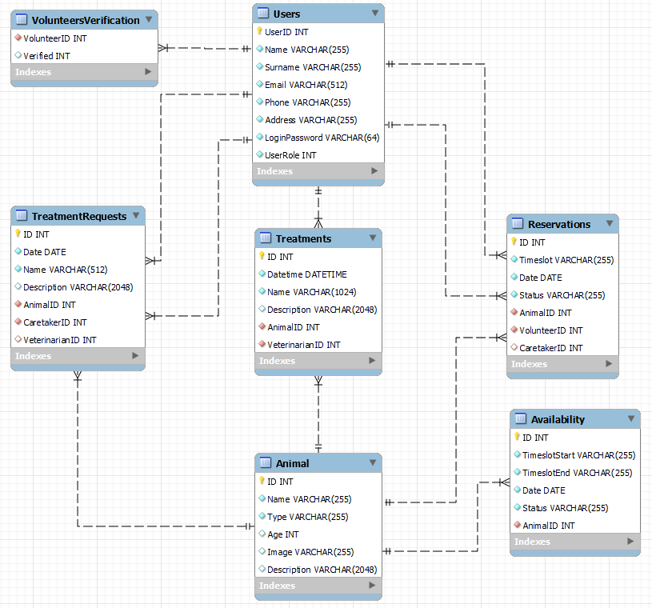

Zvířecí útulek
- Autoři
- Martin Barborík
xbarbo10@stud.fit.vutbr.cz - Stránky pečovatele a veterináře, požadavky na veterináře, front end, databáze
- Samuel Budai
xbudai01@stud.fit.vutbr.cz - Přihlašovvání a rezervační systém, stránky admina, kalendář, front end, video
- Zuzana Burešová
xbures35@stud.fit.vutbr.cz - Stránky zvířátek, historie rezervací, front end, databáze, dokumentace
- URL aplikace
- https://www.stud.fit.vutbr.cz/~xbudai01/IIS/
Uživatelé systému pro testování
| Email | Heslo | Role |
|---|
| admin@meow.com | meowmeow | Administrátor |
| ct@meow.com | 123456 | Pečovatel |
| vt@meow.com | 123456 | Veterinář |
| user1@gmail.com | 123456 | Dobrovolník - ověřený |
| user2@gmail.com | 123456 | Dobrovolník - neověřený |
Video
Odkaz na video
Implementace
Složky a jejich soubory:
admin - složka obsahující soubory řešící jednotlivé případy užití admina
- Zobrazování uživatelů/zaměstnanců - admin.php, fill_user.php a fetch_users.php
- Editování uživatelů - updateuser.php
- Vytváření nových zaměstnanců (veterinář/pečovatel) - createEmployee.php
caretaker - složka obsahující soubory řešící jednotlivé případy užití pečovatele
- Zobrazování a spracování zvířátek - caretaker.php, aad_animal.php, animal_edit.php, deleteAnimal.php a animal_view.php
- Ověřování dobrovolníků - volunteers.php, fetch_volunteers.php a verifyVolunteer.php
- Rezervace- reservationsbuilder.php, reservations.php a managereservations.php
- Vytváření požadavků na veterináře - animal_view.php, fetch_treatments.php, fetch_treatment_requests.php, deleteRequest.php a složka treatment_and_request
vet - složka obsahující soubory řešící jednotlivé případy užití veterináře
- Zobrazování dostupných/přijatých požadavků - veterinarian.php a fetch_treatment_requests.php
- Práce s požadavky - acceptTreatmentRequest.php, returnTreatmentRequest a treatment_history.php
volunteer - složka obsahující soubory řešící jednotlivé případy užití dobrovolníka
- Zobrazování zvířátek v útulku- welcome.php, animal.php a fetch_animal.php
- Rezervování zvířat - přes složku calendar
- Zobrazování historie rezervací - history.php a find_history.php
Ostatní soubory:
- index.php - úvodní stránka s informacema o útulku
- animals.php, find_animal.php a animal.php - stránka zobrazující zvířátka pro nepřiklášeného uživatele
s možností filtrace a následným zobrazením zvířátka
- login.php/register.php/logout.php - řešení přihlášení/registrace/odhlášení uživatelů
- session_exp_home.php a session_expiration.php - řešení doby činnosti/nečinnosti
Databáze

Instalace
Požadovaná verze PHP: 8.1
Postup:
- Archiv rozbalíme v libovolným softwarem pro práci s archivy (např. WinRAR, 7ZIP).
- Vše z daného archivu přeneseme na námi zvolený server, který podporuje danou verzi PHP.
- V soubore config.php nastavíme přihlasovací údaje pro přístup do databáze, kterou hodláme používat.
- Následně nad databází spustíme SQLScript.sql, který vytvoří požadované tabulky, které následně zaplní testovacími daty. Spustíme index.php.
Známé problémy
Po spuštění naší aplikace na serveru Eva, nám při ukládání obrázku není automaticky přidělované potřebné právo pro čtení obrázku. Nepomohlo ani použití příkazu chmod.